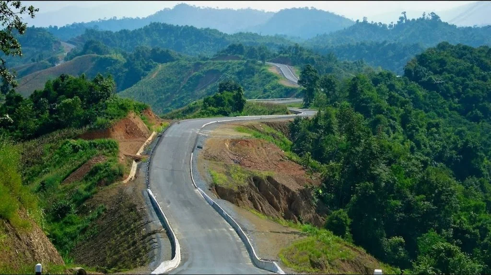
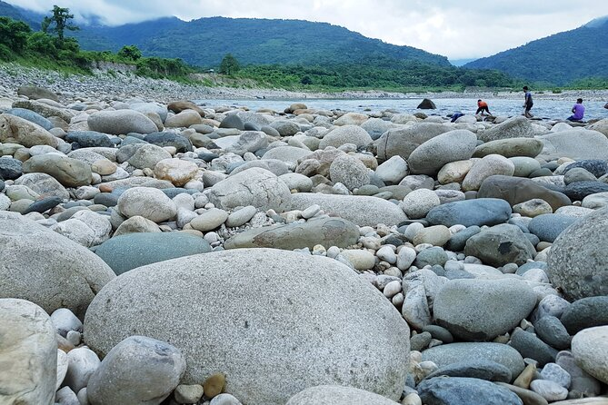

Tour panning
Publised on:
Sajek
In Sajek, the beautiful mountain in a row, the valley of clouds like white cotton will surely fascinate you. Sajek is a wonderful place surrounded by three types of nature. Sometimes, it is very hot, or it will probably be wet in the rain, and unexpectedly, a thick fog will be covered in the twinkling of the white clouds. The Sajek Valley Tour is the ideal to watch the fluttering hilly clouds like natural landscapes and cotton.
Shylet Tour
Sylhet is one of the most popular districts in Bangladesh because it has many tourist destinations. There are hordes of tourists who visit those places every day. Some of the top tourist spots are Sada pathor, Bisnakandi, Ratargul, Panthumai Jaflong, Lalakhal, Sreenongol, MadhobKunda, Dreamland park, Zakaria City, Shahjalal & Shaporan(RH) Majar and Tanguar Haor. Sylhet is also venerated as a holy place in Bangladesh because 360 Awliya were buried there...
